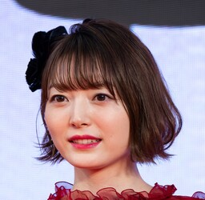
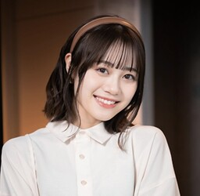
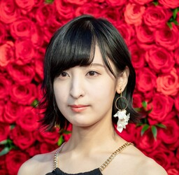

Nakanoke no Itsutsugo es un grupo musical creado a partir de las actrices de voz de los personajes principales de la serie animada / manga "Go-Tōbun no Hanayome", "The Quintessential Quintuplets" o "Las Quintillizas".
- Hanazawa Kana (花澤香菜) como Ichika Nakano
- Taketatsu Ayana (竹達彩奈) como Nino Nakano
- Ito Miku (伊藤美来) como Miku Nakano
- Sakura Ayane (佐倉綾音) como Yotsuba Nakano
- Minase Inori (水瀬いのり) como Itsuki Nakano
| Hanazawa Kana (花澤香菜) | Taketatsu Ayana (竹達彩奈) | Ito Miku (伊藤美来) | Sakura Ayane (佐倉綾音) | Minase Inori (水瀬いのり) |
|  |  |  |